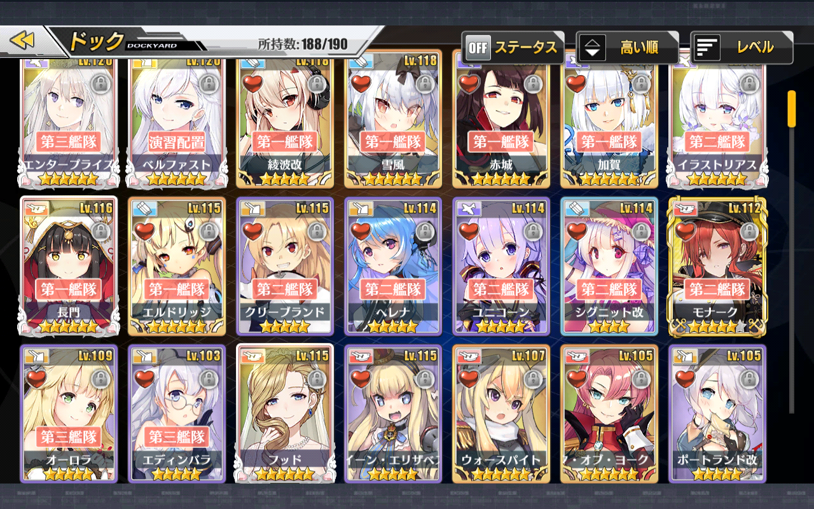
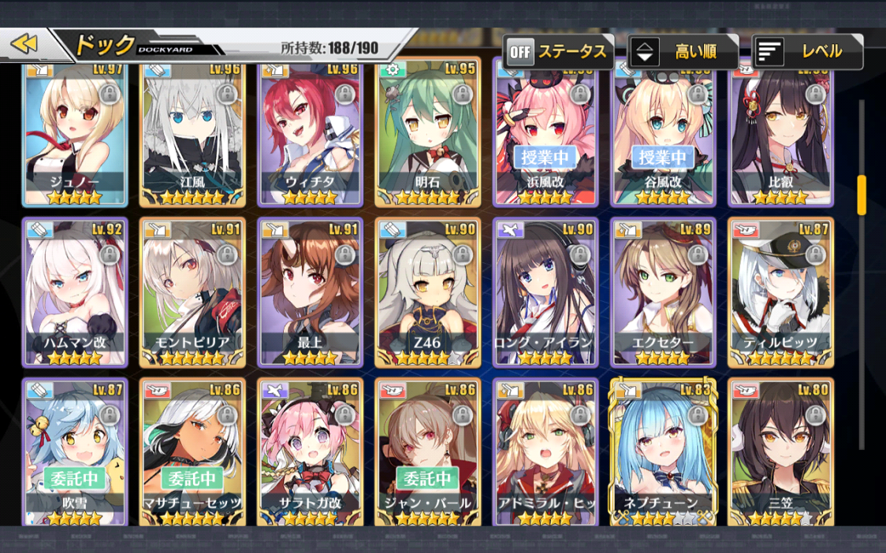
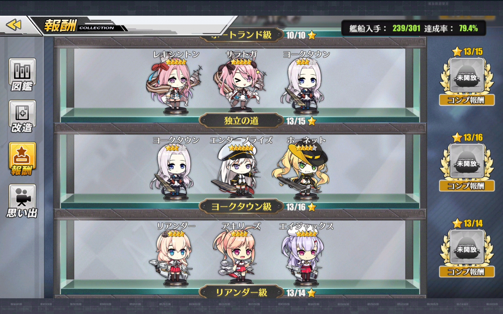

DOCKYARD
Definition
Dockyard is a place,you can uncap,retrofit,and adjust equipment for your ship's girl.All of the ship you get from drop in the map and construction will be send to your dockyard.Well,straight to the point this is my dockyard looks like.
|  |  |
Each person have their prefer own tastes for "What kind of ship's girl be able to stay in my dockyard?".As far as i known,Type of dockyard can be categorized like these :
Dockyard Type
- Competitive Dockyard This dockyard's type is purposely build for competitively againts other player based on meta.The ship in dockyard only including top tier ship with top tier equipment.
- Exclusive SSR Dockyard Anti normal,rare,and super rare ships.Because my eyes feeling pleasure if only seeing a gold color XD.
- Collector's Dockyard According to the name,doesnt matter how good or bad the ship is.Gotta Collect em all !
- Meme's Dockyard Life for the meme,sometimes there is a person that only collect loli's ship or milf's ship references to their own fetish,but as long they having fun and happy it doesn't matter.
Then,you may ask "Which is your type of dockyard,Wumpa ?".Well,im kind a hybrid dockyard between Competitive and Collector's Dockyard,in my case i love to compete againts other player and my friend to show how superior i am and other case i also love to collects cute and good looking ship even they are not in meta tier list.
Taking a note,you may need collect some ship to achieve prize in achievement on main menu,also it's better to check pre-requiremennt nationality and type of ship to collect EXP for quest of prior ship you wanna to get.you better prepare those ships in your dockyard.
| (1)Achievement | (2)Prior Ship |
|  |  |
So,which one is your type of dockyard that suits you better?